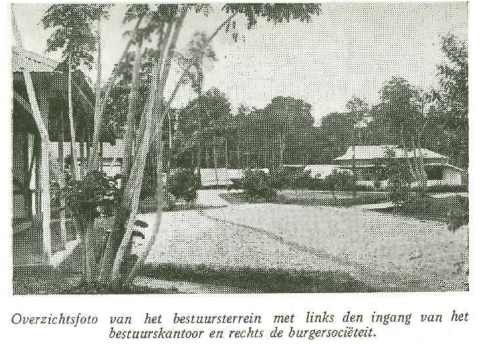

Berkemah di Boven Digoel

Rute perjalanan dari Surabaya ke Boven-Digoel. (digambar oleh L. V. Wijnhamer).
Boven-Digoel antara tahun 1927 hingga 1942 sebagai kamp pengasingan yang keras dan represif yang didirikan oleh pemerintah kolonial Belanda untuk tahanan politik, terutama komunis dan nasionalis.
Wilayah ini terletak di bagian selatan Pulau Papua, berbatasan langsung dengan negara Papua Nugini. Kabupaten Boven Digoel memiliki luas wilayah 36.000 km², dan merupakan kabupaten terluas di Provinsi Papua Selatan.
Secara administratif, Kabupaten Boven Digoel terdiri dari 10 distrik, yaitu: Distrik Boven Digoel, Distrik Waropko, Distrik Mindiptana, Distrik Fofi, Distrik Kaptel, Distrik Sota, Distrik Tanah Merah, Distrik Serui Selatan, Distrik Serui Utara, dan Distrik Yaffi.
Nama Boven Digoel berasal dari nama sungai Digoel yang mengalir di wilayah ini. Sungai Digoel merupakan sungai terpanjang di Papua, dengan panjang sekitar 1.200 km. Sungai ini juga menjadi salah satu jalur transportasi utama bagi masyarakat setempat.
Secara geografis, Kabupaten Boven Digoel terletak di daerah pegunungan dan hutan tropis, dengan ketinggian rata-rata 1.000 meter di atas permukaan laut. Boven-Digoel terletak di daerah terpencil dan penuh malaria di Papua (New Geunia). Lokasi tersebut sengaja dipilih karena sulit diakses dan kondisi alamnya yang keras. Isolasi ini dimaksudkan untuk mematahkan semangat para tahanan dan mencegah pelarian atau pengaruh luar.
Selain hal tersebut para tahanan juga menderita akibat panas yang menyengat, kelembaban yang tinggi, dan hujan yang sering sehingga menyebabkan meluasnya penyakit, terutama malaria. Beban psikologis akibat isolasi dan perpisahan dari keluarga menambah penderitaan. Lingkungan itu sendiri bertindak sebagai bentuk hukuman, yang memperparah dampak pengasingan di luar kurungan fisik.
Meskipun beberapa tahanan diizinkan untuk terlibat dalam pekerjaan atau perdagangan terbatas di dalam kamp (misalnya, menjalankan toko kecil), peluang ekonomi mereka sangat dibatasi. Struktur kamp menghambat produktivitas yang berarti apalagi melakukan pengorganisasian politik.
Kondisi di Boven Digoel terus berlanjut tanpa banyak perbaikan hingga invasi Jepang ke Hindia Belanda pada tahun 1942, saat itulah Belanda meninggalkan kamp tersebut.

Sketsa wilayah Digoel, yang terletak di Nugini Barat Daya atau di bagian Tenggara wilayah Belanda. Daerah yang ditandai dengan garis merah pada peta kira-kira mewakili subdivisi Boven Digoel.
Tanah Merah
Tanah Merah adalah ibu kota Kabupaten Boven Digoel, terletak di tepi Sungai Digoel. Kota ini merupakan pusat pemerintahan dan perekonomian kabupaten, dengan berbagai fasilitas umum seperti rumah sakit, sekolah, pasar, dan pusat perbelanjaan.
Tanah-Merah, yang terletak di pedalaman terpencil Nugini Belanda (saat ini Papua Selatan). Awalnya dibangun pada tahun 1926 untuk menampung tahanan politik, khususnya para nasionalis Jawa, kamp tersebut akhirnya dibuka kembali pada tahun 1946 untuk dijadikan tempat penahanan bagi para kolaborator dan orang-orang lain yang dianggap tidak diinginkan setelah Perang Dunia II.
Lokasi tersebut dipilih karena sulit diakses dan terisolasi, dikelilingi oleh hutan lebat dan jauh dari pusat populasi. Tempat tersebut dianggap ideal untuk memenjarakan orang-orang yang mungkin akan memberikan pengaruh atau memicu kerusuhan. Tantangan logistik untuk memelihara kamp tersebut—termasuk transportasi, perawatan medis, dan perlengkapan—sangat signifikan dan mencerminkan strategi kolonial yang lebih luas untuk penahanan dan pengendalian.
Di wilayah ini dibangun beberapa kamp, dengan nama Kamp 17, Kamp 18, dan Kamp 19. Kamp tersebut berada di tengah hutan dengan sanitasi buruk dan kelembaban tinggi dengan sedikit infrastruktur. Para tahanan di Kamp 17, 18,dan 19 mengalami kondisi yang sangat sulit. Pada buku yang berjudul "Boven-Digoel" karya L.J.A. SGHOONHEYT menceritakan tentang gubuk-gubuk yang bocor, lingkungan yang kotor, kawanan nyamuk, dan suasana yang sangat tidak sehat sehingga para tahanan sering jatuh sakit. Banyak tahanan, terutama mereka yang tidak terbiasa dengan penyakit tropis, menderita malaria dan disentri. Kamp itu tidak memiliki fasilitas medis yang memadai, dan beban psikologis isolasi dari dunia luar, terutama dari keluarga dan gerakan nasionalis, menambah penderitaan.
Pada tahun-tahun pascaperang, Tanah-Merah menjadi simbol ketegangan politik yang lebih luas di Hindia Belanda dan kemudian Indonesia, khususnya mengenai otoritas Belanda dan perlakuan terhadap individu yang dituduh (sering kali dengan proses hukum terbatas) bekerja sama dengan pendudukan Jepang.
